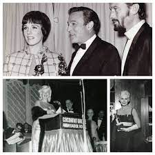

| Home Film Art Books Music TV Style |
Click the picture
In a year that was supposed to reinvent the scandal-hit awards, the Golden Globes played it safe. But with an unfunny host and no entertainment factor, they were "just plain dull".
It was the truest moment the television cameras captured at the Golden Globes: an unidentified woman sat at a table and let out a giant yawn. This year was meant to reinvent the awards, which were nearly destroyed when a 2021 Los Angeles Times report found lack of diversity and accusations of corruption in the Hollywood Foreign Press Association, the group behind the Globes at the time. But the reconstituted group running things now couldn't have intended the event to be so earnest and just plain dull, from Jo Koy, the blandest, least funny host in recent memory, to the sober, safe acceptance speeches. There were no political statements, no drunken rambling, no jaw-dropping surprises among winners and losers, all the things that made the old show at least fun to watch. Without the entertainment factor, it's easier to see the Golden Globes for what they are: a campaign stop on the way to the Oscars.
The top Oscars, for best director and best picture, are widely seen as a race between Nolan and Oppenheimer v Scorsese and Killers of the Flower Moon, which did go head-to-head at the Globes. Nolan's win for director and Oppenheimer's for best drama would seem to give them the edge. But, reality check: last year, The Banshees of Inisherin and The Fabelmans won in comedy and drama categories and lost the Oscar to Everything Everywhere All At Once. Spielberg won the Globe for directing but lost to the Daniels. The Globes are not always good predictors of the Oscars.
If the mere perception of winning helps a campaign anyway, being labelled a loser can hurt. That is bad news for Bradley Cooper, whose Maestro, once considered a major awards contender, did not win a single Golden Globe. Cooper looked crestfallen at the end of Nolan's acceptance speech.
Barbie, which had nine nominations, more than any other film, lost all the big prizes. Billie Eilish and Finneas O'Connell's What Was I Made For? won best original song and the film won a new award the Globes made up this year for cinematic and box office achievement, for a movie that earned more than $150 million. In 2018 the Oscars announced a similar "most popular film" category, which was so ridiculed it was scrapped before it even happened, but the Globes shamelessly went for it. None of that reads as Oscar momentum.
History
The Hollywood Foreign Press Association (HFPA) was founded in 1943 as the Hollywood Foreign Correspondent
Association(HFCA) by Los Angeles–based foreign journalists seeking to develop a better-organized process of
gathering and
distributing cinema news to non-U.S. markets.[6][7][8][9] One of the organization's first major endeavors was to
establish a ceremony similar to the Academy Awards to honor film achievements. The 1st Golden Globe Awards,
honoring the best achievements in 1943 filmmaking, were held in January 1944, at the 20th Century-Fox studios.
Subsequent
ceremonieswere held at various venues throughout the next decade, including the Beverly Hills Hotel and the
Hollywood
Roosevelt
Hotel.
Rules
Eligibility
Screening requirements
Nominations and voting
Ceremony
The broadcast of the Golden Globe Awards, telecast to 167 countries worldwide, generally ranks as the third
most-watched
awards show each year, behind only the Oscars and the Grammy Awards. Since 2010, it was televised live in all
United
States time zones. Until Ricky Gervais hosted in 2010, the award ceremony was one of two major Hollywood award
ceremonies (the other being the Screen Actors Guild Awards) that did not have a regular host; every year a
different
presenter introduced the ceremony at the beginning of the broadcast. Gervais returned to host the 68th and 69th
Golden
Globe Awards the next two years.[41] Tina Fey and Amy Poehler hosted the 70th, 71st and 72nd Golden Globe Awards
in 2013
through 2015. The Golden Globe Awards' theme song, which debuted in 2012, was written by Japanese musician and
songwriter Yoshiki Hayashi.[citation needed]
2024-01-10